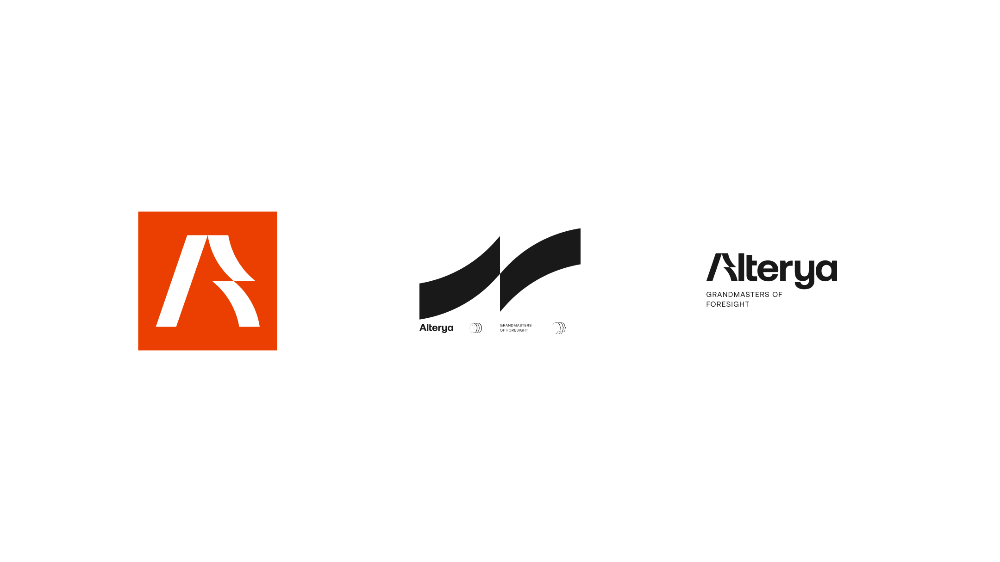
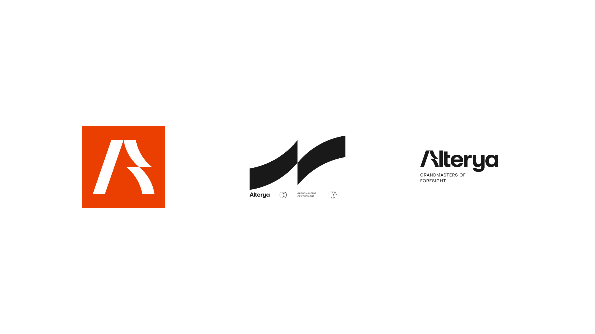
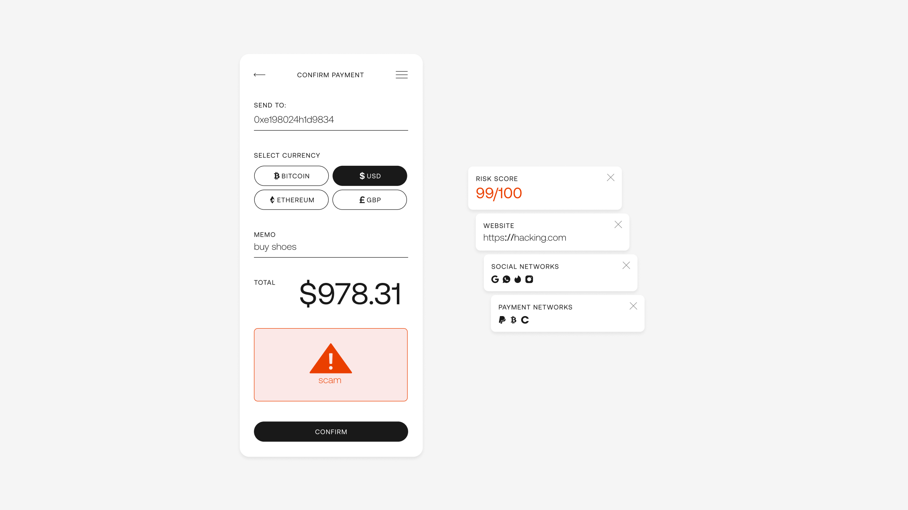
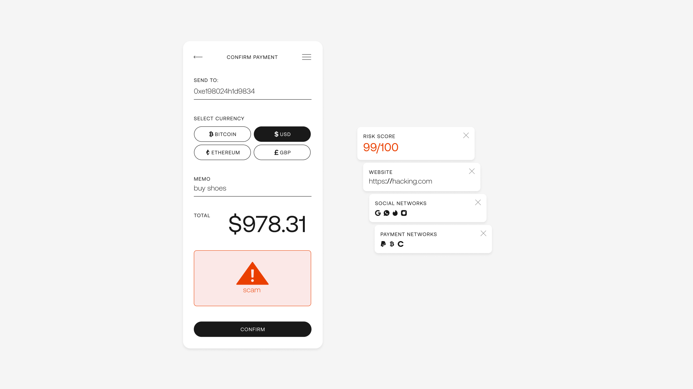
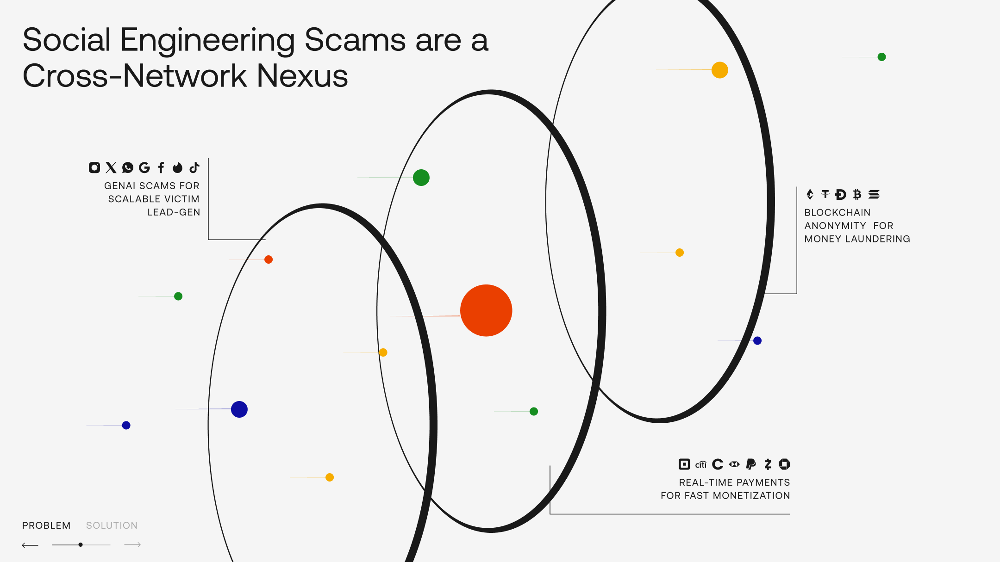
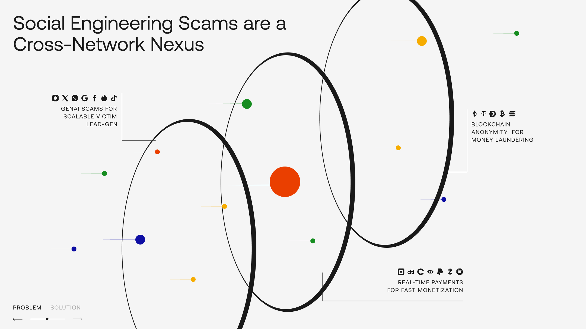

a brand sprint for alterya
in the evolving landscape of digital finance, cybercriminals have become masters of deception, shifting from system vulnerabilities to human psychology. alterya stands as a grandmaster of foresight in this complex game.
while others focus on outdated defenses, alterya anticipates the next move. as scammers craft sophisticated ai-generated scams that bypass 90% of traditional security measures, we're already ten steps ahead, dismantling their strategies before they materialize.
alterya is a revolutionary blend of artificial and human intelligence—proactive, cross-network, adaptive, and effective. we equip fraud preventers with a grandmaster's perspective, offering multi-dimensional visibility across social, payment, and blockchain networks. we transform potential vulnerabilities into unbreakable defenses.
client | alterya
creative directors | eden vidal, inbal lapidot vidal
brand designer | hadar lozon
 



 

 
